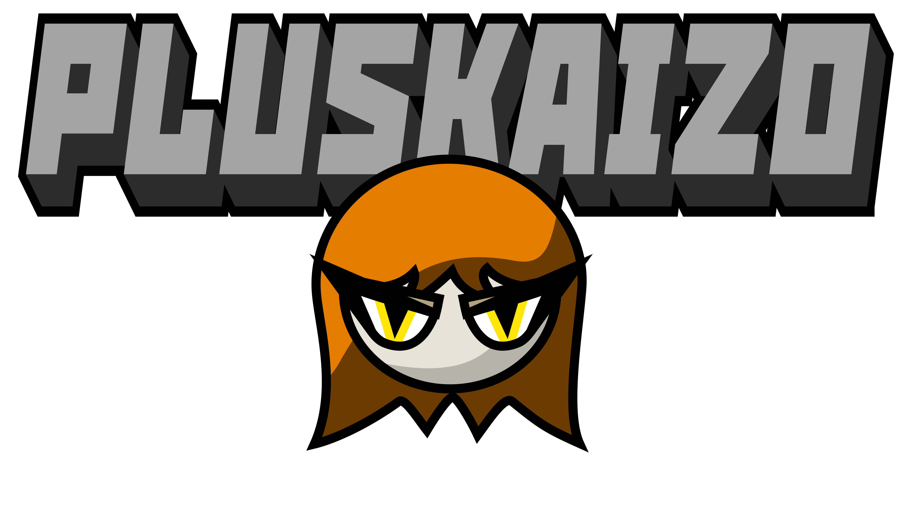

+KAIZO by +KZ is a (not) easy game with the following random story:
Chydia (the main character) was living in the city, until some random day the reality
got distorted, the city turned into a dangerous forest and a lot of weird
monsters appeared. The forest is very dangerous and everyone is scared,
but Chydia is the most agile person in the world, she
is the only one that can go through the danger and investigate what is going on.
Im currently rewriting the game, sorry xd
(Old) Source Code
Discord Server
PLUSKAIZO © Benjamín Gajardo All rights reserved